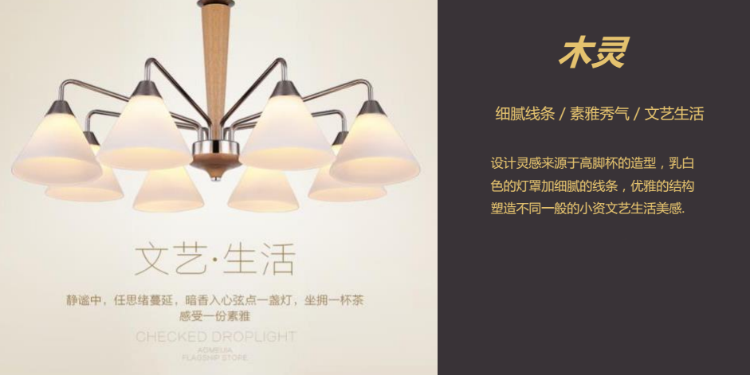

大师用灯就是这么不一样
2017.07.21 案例
当夜幕降临，灯光照亮了整个世界。此时便是灯光设计师的舞台，这个舞台上各国大师用自己的灯光表达自己对生活独特的诠释，以灯光在纷纷扰扰的生活中尝试摒弃繁文缛节，打造简单的生活，却不乏味、不平庸，细节处彰显底蕴，展现精彩。
面出薰——有了黑暗,才能显出光明。有了黑影,我们才看得见光
面出薰（Kaoru Mende）是二战结束后成长起来的一代日本人，他身上具有质朴谦逊的令人肃然起敬的品质。一直以来，他以执著和真诚的姿态为世人烹调出一场场光的盛宴，用他严谨的照明设计成就了众多的建筑。从日本本土的东京新宿高岛屋百货公司的商业照明，到新加坡最高法院的办公照明，再到城市照明，无所不包，每一次他都用不一样的光裹挟着他对建筑、对设计的认识，来为世人展示光的力量。流派系列灯光犹如面出薰大师全能灯光设计，设计师一反传统方式，以大胆的想象，全新的吸铁石安装方式，打破传统的固定模式，各类组合模式随心安装，体现出自由的生活态度，打造浪漫的生活方式。灯饰和空间的韵律节奏、功能主题转换，体现我们对当下时尚生活品质的认识。
罗杰•纳博尼（Roger Narboni）——灯影水色两相宜
Concepto事务所的法国著名照明设计师罗格·纳博尼（Roger Narboni）是世界著名的夜景规划专家，也是法国照明设计师学会的创始人之一，曾主持过布鲁塞尔、雅典、图卢兹、波尔多等100多个国际大都市的夜景规划和设计项目，同时也规划过巴黎塞纳河的夜景照明。他与中国也有难解之缘，参与设计京杭大运河的灯光设计，惊艳世界。他以西方的视角和设计手法将东方的摩登气质完全表现出来，木灵系列灯饰以中式传统木头的质感，加以西方高脚杯的造型，配合细腻的线条，素雅秀气。中西合璧，塑造出不同一般的小资文艺生活美感。


关永权——灯光没有东西方之分
他是被全球最优秀的灯光设计师之一，设计作品遍布全球，从伊朗皇宫到东京顶级奢华酒店，都可欣赏到他令人目眩神迷的灯光设计。自1987年起，先后获得业内外不同机构的嘉奖，获奖项不计其数，其中有2007年的香港十大杰出设计师称号。他提倡用最少的灯光达到最好的效果，在不断地灯光调试中创造奇迹。他以灯饰在视觉上达到活泼的效果，涟漪系列灯饰充满的动感的造型，独具匠心的设计使空间充满灵性， 仿佛层层荡漾的水波形态，由多个大小不一的正圆高低错落随性排列，充满层次感，没有太多的修饰却在不经意间为空间创造一个自在的浪漫居所。
灯光在设计大师手上赋予了新的灵魂，既是独立。亦保有通透性，灯饰的设计细看有着精炼线条的动态安排，同时含一气呵成的结构美感。雷士照明作为中国照明行业的领头羊，集结设计大师对于室内设计，创意与实用性并重的观点，始终坚持产品自主研发创新，与设计大师携手为城市提供高效节能、健康舒适的照明环境和照明解决方案。